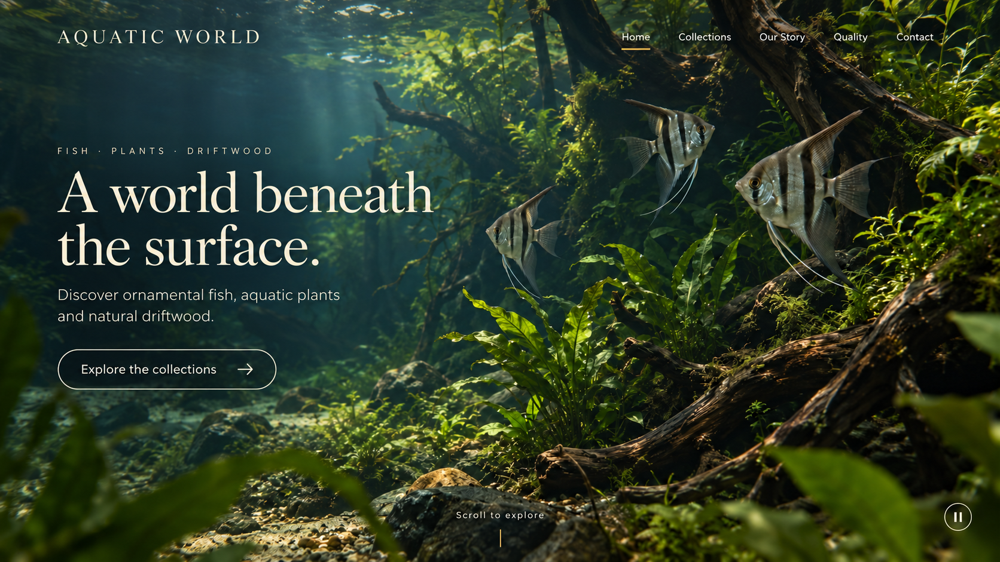
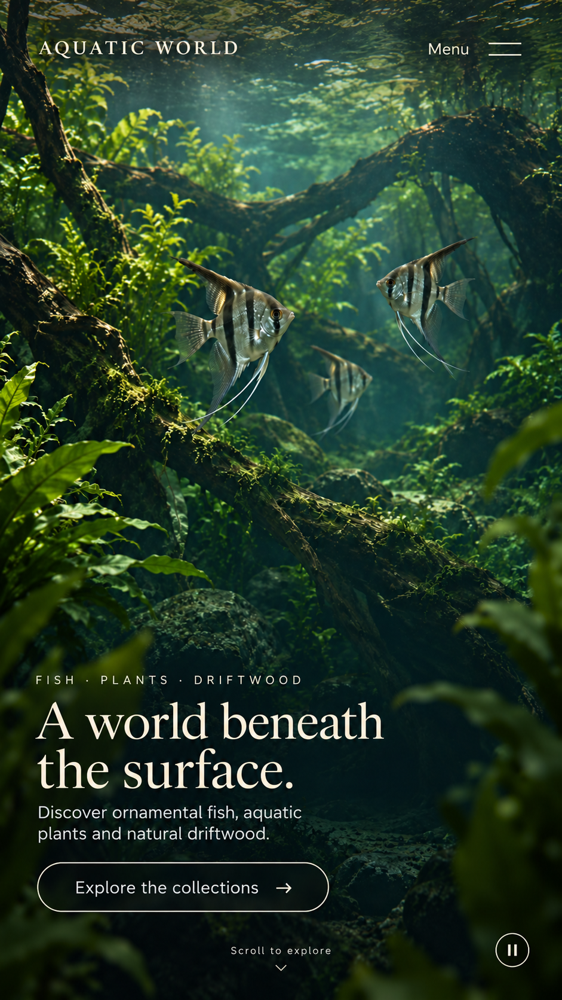
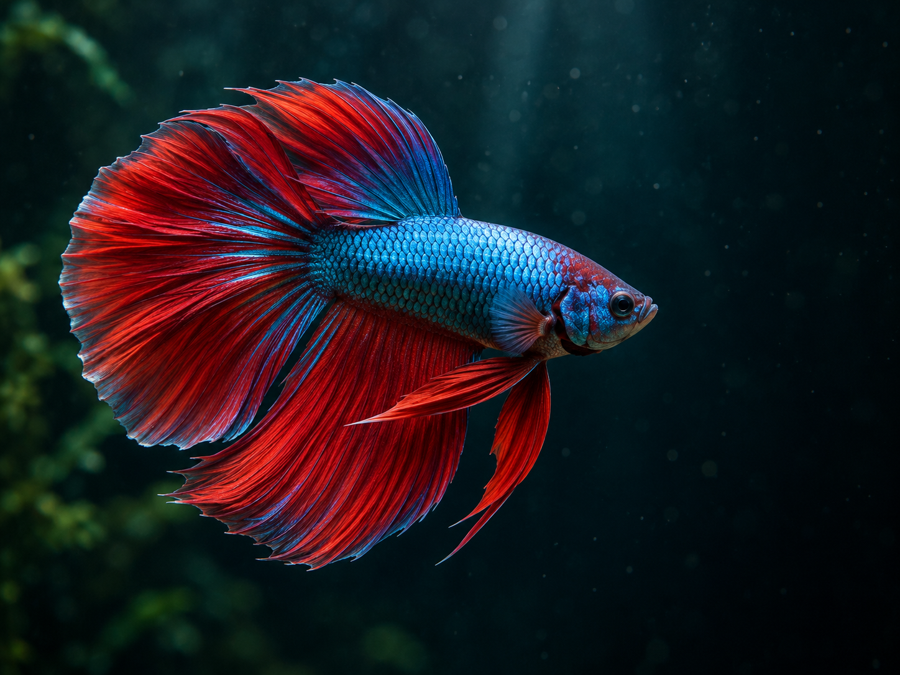
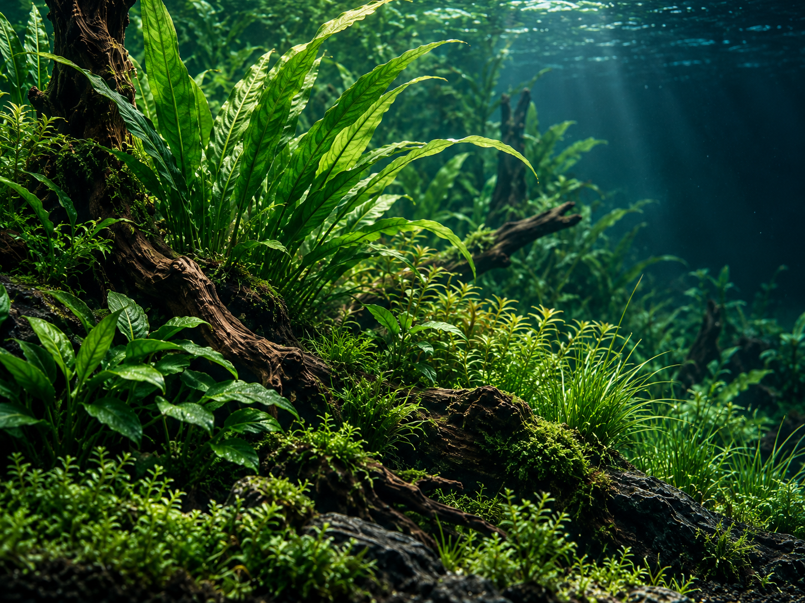
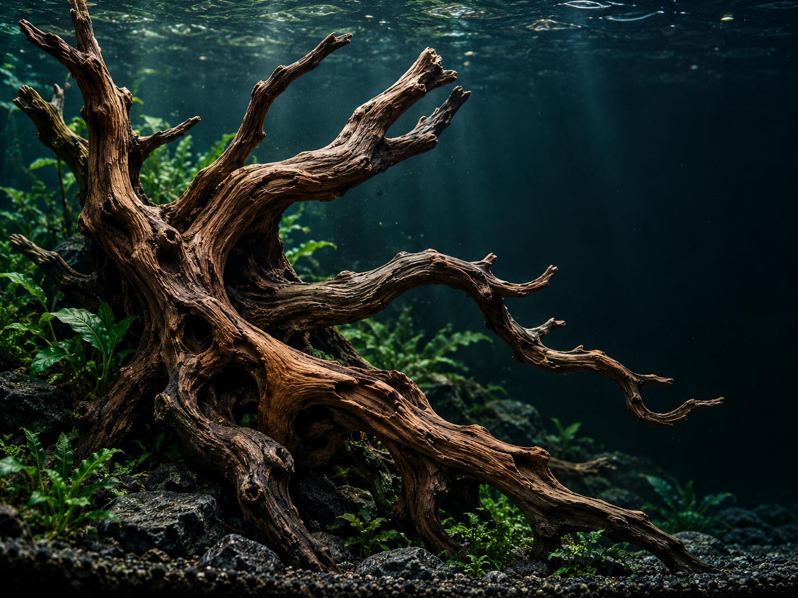

Aquatic World — Cinematic Home v2
Static art-direction concepts. These images are not a functioning website or playable video. A new US$3 video budget is authorized, but the first submission returned an unknown outcome. No retry or portrait submission has occurred; motion quality and responsive behavior remain to be reviewed.




Existing category imagery for the lower Home chapters
These are original shared AI-generated illustrative assets from 2026-10-10, selected for reuse. Their final page layout is defined in the shared brief.



Clean film inputs
Landscape scene · Portrait scene. Production video will contain no burned-in text, navigation or controls.